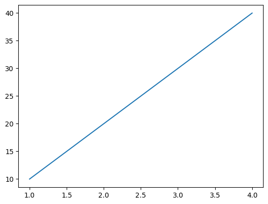

ENG EK 125 – Quiz Review (Classes 14 & 15)#
1. Variable Scope#
# ------------------------------------------------------------
# 1) Variable Scope
# ------------------------------------------------------------
x = 10
def test():
global x
x = 5
# What will this print?
print(x)
test()
print(x)
5
5
2. List Copy vs Original#
numbers = [1,2,3]
new_numbers = numbers
print(new_numbers)
print(numbers)
numbers[0] = 10000
print(new_numbers)
print(numbers)
[1, 2, 3]
[1, 2, 3]
[10000, 2, 3]
[10000, 2, 3]
# ------------------------------------------------------------
# 2) Copy vs Original List
# ------------------------------------------------------------
# What is the final value of numbers?
numbers = [1, 2, 3]
numbers_copy = numbers.copy()
numbers_copy.append(4)
print(numbers)
print(numbers_copy)
[1, 2, 3]
[1, 2, 3, 4]
3. Lists in Functions#
# ------------------------------------------------------------
# 3) Lists Passed to Functions
# ------------------------------------------------------------
'''
def modify_list(my_list):# mylist = data
my_list.append(100)
data = [1, 2, 3]
modify_list(data)
print(data)
##############
'''
def modify_list(my_list):
my_list = my_list + [100]
print(my_list)
data = [1, 2, 3]
modify_list(data)
print(data)
'''
##############
def modify_list(my_list):
my_list = my_list + [50]
return my_list
data = [1, 2, 3]
final_data = modify_list(data)
print(final_data)
'''
[1, 2, 3, 100]
[1, 2, 3]
'\n##############\n\ndef modify_list(my_list):\n my_list = my_list + [50]\n return my_list\n\ndata = [1, 2, 3]\nfinal_data = modify_list(data)\nprint(final_data)\n'
4. Matplotlib Basics#
Elements of a good plot:
Title
X-axis label
Y-axis label
Legend (if multiple datasets)
# ------------------------------------------------------------
# 4) Matplotlib Basics
# ------------------------------------------------------------
import matplotlib.pyplot as plt
"""
plt.plot() # showing trends or connections between points
plt.scatter() # shows individual points without connecting lines, best for points
plt.bar() # best for categories or discrete groups
plt.hist() # best for distribution of continuous data
"""
# Line plot (plt.plot) - trends or connections
x = [1, 2, 3, 4, 5]
y = [2, 4, 6, 8, 10]
plt.figure(figsize=(5,3))
plt.plot(x, y, marker='o', color='blue', label='Trend')
plt.title("Line Plot Example")
plt.xlabel("X-axis")
plt.ylabel("Y-axis")
plt.legend()
plt.show()
# Scatter plot (plt.scatter) - individual points
x = [5, 7, 8, 7, 2]
y = [99, 86, 87, 88, 100]
plt.figure(figsize=(5,3))
plt.scatter(x, y, color='red')
plt.title("Scatter Plot Example")
plt.xlabel("X-axis")
plt.ylabel("Y-axis")
plt.show()
# Bar plot (plt.bar) - categories
categories = ['Apples', 'Bananas', 'Cherries']
values = [10, 15, 7]
plt.figure(figsize=(5,3))
plt.bar(categories, values, color='green')
plt.title("Bar Plot Example")
plt.ylabel("Quantity")
plt.show()
# Histogram (plt.hist) - distribution
data = [1,2,2,3,3,3,4,4,4,4,5,5,5,6,6,7]
plt.figure(figsize=(5,3))
plt.hist(data, bins=6, color='purple', edgecolor='black')
plt.title("Histogram Example")
plt.xlabel("Value")
plt.ylabel("Frequency")
plt.show()
---------------------------------------------------------------------------
ModuleNotFoundError Traceback (most recent call last)
Cell In[5], line 5
1 # ------------------------------------------------------------
2 # 4) Matplotlib Basics
3 # ------------------------------------------------------------
----> 5 import matplotlib.pyplot as plt
6 """
7 plt.plot() # showing trends or connections between points
8 plt.scatter() # shows individual points without connecting lines, best for points
9 plt.bar() # best for categories or discrete groups
10 plt.hist() # best for distribution of continuous data
11 """
13 # Line plot (plt.plot) - trends or connections
ModuleNotFoundError: No module named 'matplotlib'
5. Plot Creation vs Display#
# ------------------------------------------------------------
# 5) Plot Display Behavior
# ------------------------------------------------------------
import matplotlib.pyplot as plt
xValues = [1, 2, 3, 4]
yValues = [10, 20, 30, 40]
plt.plot(xValues, yValues) # creates the plot but does not display it (in a script)
plt.show() # to display the plot (in a script)
# in collab, plt.show() is not needed
# in a script (.py), plt.show() is needed

6. File Modes#
with open('example_file.txt', 'w') as f:
f.write('10\n20\n30\n')
7. readlines() Behavior#
# ------------------------------------------------------------
# 6) File Modes
# ------------------------------------------------------------
"""
'r' → opens for reading (error if missing)
'w' → opens for (over)writing (deletes existing file and creates new one, does NOT append data to end of existing file)
'a' → opens for appending a file, creates file if it doesn't exist
'r+' → opens for reading + writing to a file (error if missing)
"""
# file.read() reads the entire contents of the file into a single string
# ------------------------------------------------------------
# 7) readlines()
# ------------------------------------------------------------
with open('example_file.txt', 'r') as sth_else:
lines = sth_else.readlines()
print(len(lines)) # prints 3
print(lines[1]) # prints 20\n
for line in lines:
print(line)
3
is
my name
is
Onur
8. File Existence#
# ------------------------------------------------------------
# 8) File Existence
# ------------------------------------------------------------
import os
filename = 'example_file.txt'
# fill in condition below
if os.path.exists(filename): # or os.path.exists('example_file.txt')
print("File exists")
"""
with open(filename, 'r') as file:
content = file.read()
print(content)
"""
else:
print("File not found")
File exists